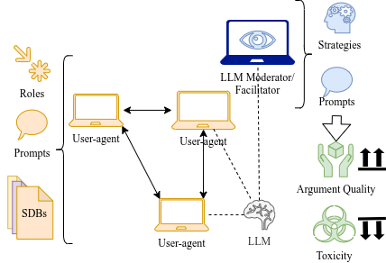

Overview

An example use-case of SynDisco on online discussions. The framework can be adapted to many use cases.
SynDisco is a Python library which creates, manages, and stores the logs of
synthetic discussions (discussions performed entirely by LLMs).
Each synthetic discussion is performed by actors; actors can be
user-agents (who simulate human users), moderators (who simulate
human chat moderators), and annotator-agents (who judge the discussions
after they have concluded).
Example: A synthetic discussion takes place between Peter32 and Leo59 (user-agents) and is monitored by Moderator1 (moderator). Later on, we instruct George12 and JohnFX to tell us how toxic each comment in the discussion is (annotator-agents).
Since social experiments are usually conducted at a large scale, SynDisco
manages discussions through experiments. Each experiment is composed of
numerous discussions. Most of the variables in an experiment are randomized
to simulate real-world variation, while some are pinned in place by us.
Example: We want to test whether the presence of a moderator impacts synthetic discussions. We create Experiment1 and Experiment2, where Exp1 has a moderator and Exp2 does not. Both experiments will generate 100 discussions using randomly selected users. In the end, we compare the toxicity between the discussions to resolve our hypothesis.
In general, each discussion goes through three phases:
generation (according to the parameters of an experiment),
execution, and annotation.
See how you can easily use these concepts programmatically in the Guides section.
How to Customize Your Discussion
There are several ways to customize the type of discussion experiments
SynDisco will be conducting. Customization is achieved by tuning the
general instruction prompt, context prompt, participant personas,
participant roles, and seed comments. We explain each of these
below:
General instruction prompt: What it says on the label :-)
Context prompt: This should be used to give necessary information on the experiment to all participants, no matter their role. Example: If simulating a forum, the context given to the moderator, users, and annotators would be something like: “This is an online discussion.”
Participant personas: In order to achieve more “realistic” (or at least varied) discussions [1] we can supply each simulated user with a list of socio-demographic and personality traits. This is achieved using a unified
Personadataclass. Personas can be serialized/loaded as a JSON file using the following schema:{ "username": "P000", "age": "Under 18", "sex": "Female", "sexual_orientation": "European", "demographic_group": "White", "current_employment": "Unemployed", "education_level": "Primary education", "special_instructions": "", "personality_characteristics": [ "Active", "Enjoys playing with technology and gadgets" ] }
Participant roles: Some of you may have noticed a sneaky trait in the example above that is neither socio-demographic nor psychological in nature:
special_instructions. This field gives each individual actor unique instructions. If we want to simulate online discussions, this field could be used to turn some users into trolls.Seed comments: Discussions usually have to start from somewhere—an observation, small talk, or an ideological rant [2] [3]. You can supply different starting points (“seed comments”) for each discussion. These can be one comment or several. You can create your own or use datasets such as Reddit threads. This also enables “restarting” synthetic discussions to examine how changing a single initial response impacts the rest of the conversation.
Footnotes